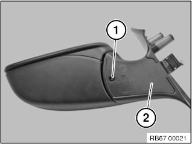
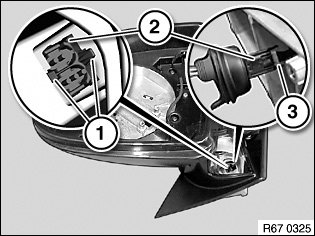
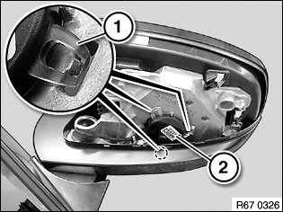

67 13 025 Replacing Mirror Electronics For Electrically Operated Left or Right Door Mirror
67 13 025 Replacing Mirror Electronics For Electrically Operated Left Or Right Door Mirror

Necessary preliminary work:
- Remove drive for door mirror
- Remove housing on door mirror
- Remove door mirror

Release screw (1).
Remove cover cap (2).

Press together catches (1) of plug (2) and press plug (2) through in outward direction.
Unlock plug (2) on contact carrier (3) and pull out.

Carefully release latch mechanisms (1).
Feed out mirror electronics (2) with cable.